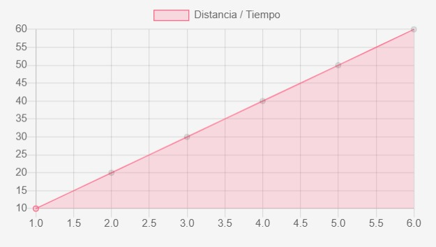
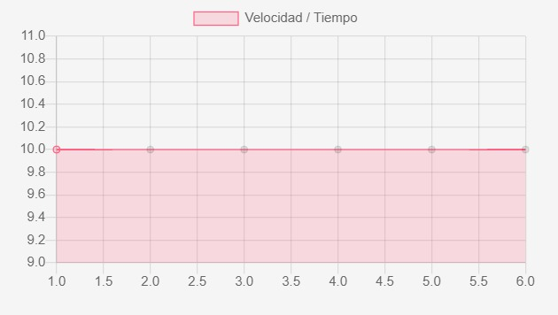
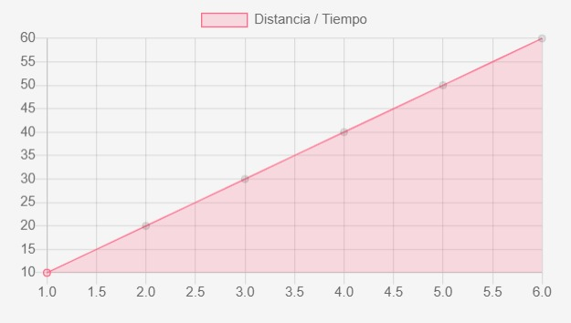
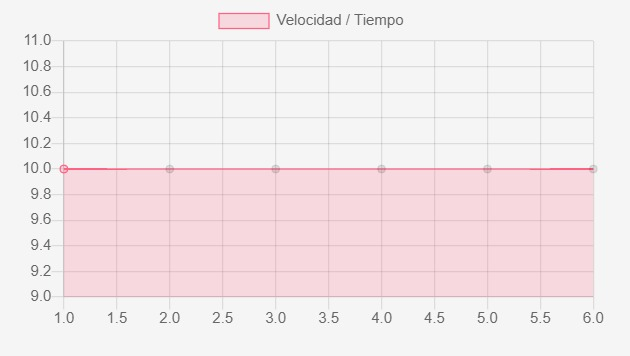

| Posicion | d = v*t |
| Tiempo | t = v * d |
| Aceleracion | a = 0 |
| Velocidad | v = d/t |
Distancia

Velocidad

DEFINICION
El movimiento rectilinio uniforme (m.r.u) describe el desplazamiento de un objeto en una sola direccion con una velocidad y tiempo constante en una determinada distancia. Recuerda que la velocidad es un vector, entonces, al ser constante, no varia ni su magnitud, ni su direccion de movimiento.
Lugar sin importar el camino seguido, tiene una relación estrecha con el movimiento de un cuerpo.
Lugar físico en el que se encuentra un cuerpo dentro de un espacio determinado.
Cambio de lugar que experimenta un cuerpo dentro de un espacio determinado.
Objeto sobre el cual se puede crear cualquier tipo de medición.
Es la forma como se mueve un cuerpo de un punto a otro.
Es cualquier objetivo cualquiera sin importar su tamaño forma o color.
FORMULAS
| Posicion | d = v*t |
| Tiempo | t = v * d |
| Aceleracion | a = 0 |
| Velocidad | v = d/t |
Distancia

Velocidad
